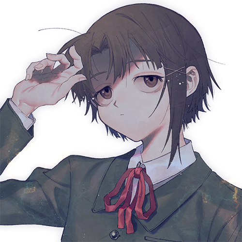
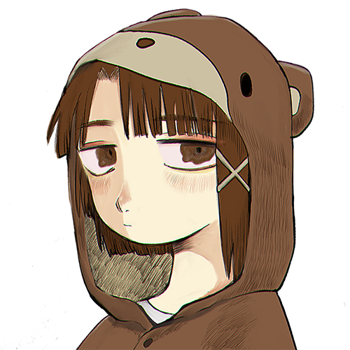
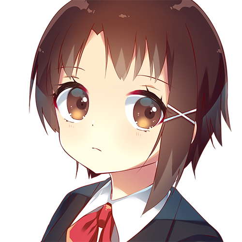
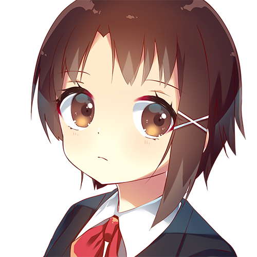

youlained.gmail.com
上記のmailアドレスに岩倉玲音さん(lain関連)の絵を送ってください
そうすると、ここに載ったり載らなかったりします
私が単純に幸せな気持になる、ということだけなのですが……ここでrequest!
<背景単色(特に白)・ジト目(目とじ)・退廃的> 形式はpng, 透過pngだと尚喜びます
もし公にしたくない場合は、そのことをmailにて記載するようお願い申し上げます
(実際の解像度は1000x1000や2000x2000です どんな大きさでもok, good)
縦長横長なんでもござれ でも名前の表記は英数字だと嬉しいな




 

delete